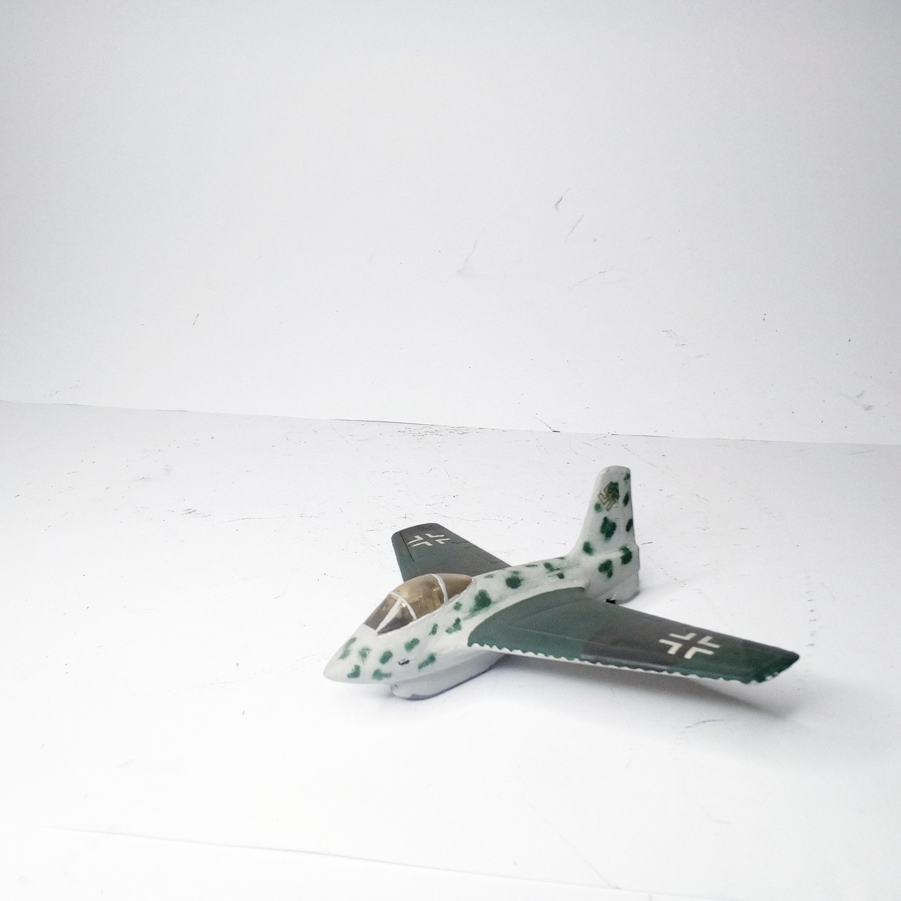
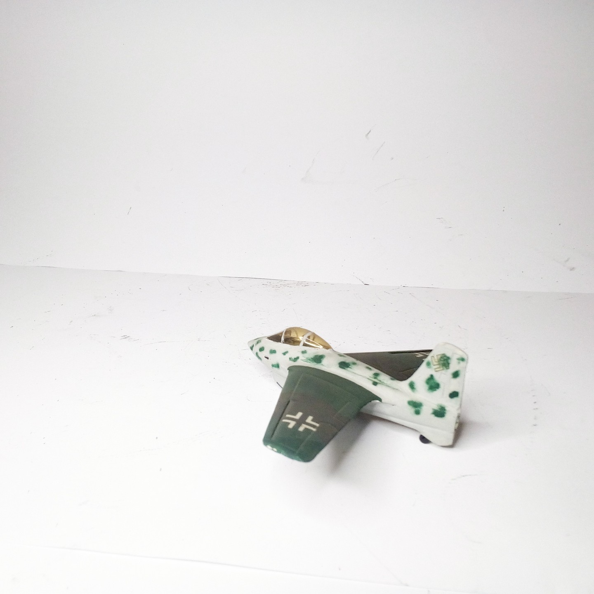

Aerei · scale model archive
Messerschmitt Me163C
Messerschmitt Me163C — Kit: Airmodel. Scale 1:72 Evolution project of the Me162B but still with most if the inherent limitations in terms of range, but…

Photo gallery

English description
Scale 1:72
Evolution project of the Me162B but still with most if the inherent limitations in terms of range, but still I like the teardrop canopy very much
#1/72 #Airmodel
Descrizione italiana
Evolution progetto del Me162B but still con most if il inherent limitations in terms di gamma, but still mi piace il teardrop tettuccio very much.